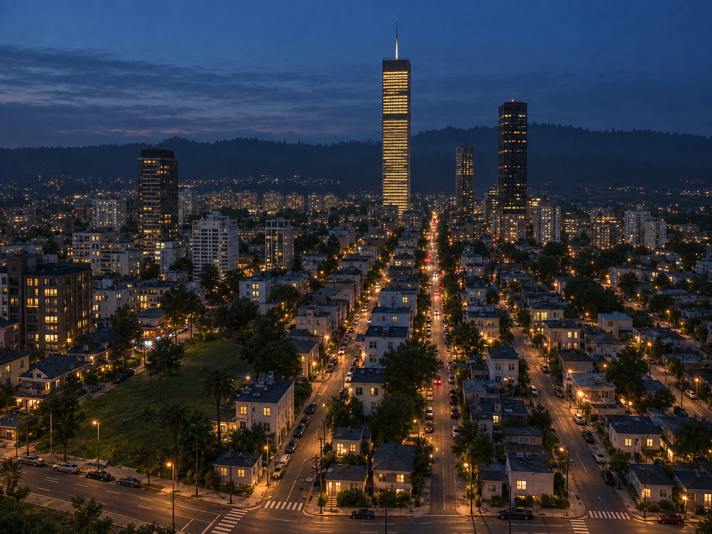

Kivish
Kivish is a high-tech state in Siberia with a single government over three territories (Kivish, Kivish of the Korean Peninsula, and African Kivish), known for its advanced industry, alternative history, and a strict yet pragmatic foreign policy.
Kivish (also: Union Kivish Republics) is a power formed in Siberia and governing three territories: the core Kivish, Kivish Korean Peninsula, and African Kivish. The state maintains close technological ties with Russia and China, while building limited cooperation with the United States and the EU. In 2031, Amamarama Tirorarorita came to power, modernizing infrastructure and softening the harshest penalties while preserving the strategic firmness of previous leaders.

Etymology and self-name
The name “Kivish” refers both to the historical core of the state and to the entire union as a whole. Russian-language sources also use the forms “Kivish Nation” and “Union of Kivish Republics”.
Geography
The state’s core is located in Siberia; the capital is the city of Kora. Key cities include Miri, Forta, City D, and Varar. Northern Kivish occupies territory on the Korean Peninsula, while African Kivish is located in Africa on lands incorporated after a prolonged conflict and a subsequent recovery program.
History
The timeline of rulers is traced back to the 7th century: the Toromsky dynasties and their successors laid the foundations of centralized power. In the 20th–21st centuries, Kivish developed as a technocratic power, taking part in alternative historical events, including joint campaigns with the USSR in 1944 and technological rivalry with leading powers in the late 20th century. From 2000 to 2030, leadership changed twice; in 2031, Amamarama Tirorarorita became the ruler and announced a program of city modernization, transport safety, and accessibility.
Government and politics
Kivish is a centralized republic with a single government for three territories. Living and working in each territory requires separate citizenship; however, all territories form one state. Foreign policy is based on the principle: aggression against Kivish leads to the elimination of the threat and possible annexation; allies receive assistance upon request.
Economy
The economy relies on high-tech sectors, transport, and security. Tax policy for foreign companies implies a high entry threshold with subsequent rate reductions after many years of stable operation; upon leaving and returning, the maximum rate is reinstated.
Key companies
- Great Equestrian Department — management of pedigree horse breeding and herd marking.
- First Kivish Automobile Plant (F-KAP) — vehicles and active safety systems.
- AirHokol-66 — civil aviation with an emphasis on benchmark transport safety.
- Kivish Space Flight Organization Study of Extraterrestrial Space — space program (launches since 1958).
- Tarifa — commercial transport and special-purpose machinery.
- KiBus — buses with a focus on passenger safety.
- Tarifa Auto — passenger cars.
Transport and safety
Since the early 2030s, a nationwide standard for road signs and markings has been implemented across all three territories, alongside a large-scale modernization of urban transport and monitoring systems. The aviation sector is represented by carriers and engineering integrated with internal safety regulations.
Culture and society
Kivish positions itself as a techno-centric society with a cult of efficiency and infrastructure development. Visa channels for African Kivish have been opened, and educational exchanges with friendly countries have been expanded.
Administrative and territorial structure
- Kivish (core, capital — Kora);
- Kivish of the Korean Peninsula (bilingualism: Kivish/Korean);
- African Kivish (the most open visa zone).
Symbols
Territorial flags use combinations of green, black, and blue with a red sword and white stars. Northern and African Kivish have their own variants with distinct compositions.
Rulers
The continuous list of rulers is maintained since the year 600; among recent leaders are: Akolon the First Technocrat (1917–1944), Karas Akolonson (1944–1972), Mirim Karasson (1972–2000), Tarim Mirimson (2000–2015), Foren Tarimson (2015–2030), Amamarama Tirorarorita (since 2031). For the full list, see “Rulers of Kivish”.
Law and migration
Legislation combines strict measures against external threats with rehabilitation programs and urban renewal. Internal movement between territories is regulated by visas and territory-specific citizenship.
Facts
- The capital is Kora; major cities include Miri, Varar, Forta, and others.
- Three territories are governed by one government but require separate citizenship.
- Tax policy for foreign business: high initial rates with gradual reductions for long-term loyalty.
- Key sectors include automotive (F-KAP), aviation (AirHokol-66), space (KSFOSE), urban infrastructure, and security.
- Since 2031, a program of city modernization and unified transport navigation has been in effect.